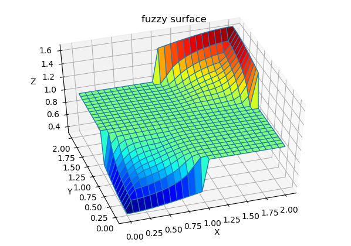
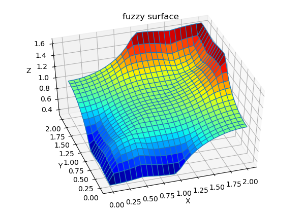
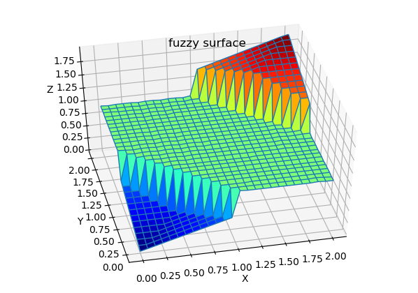
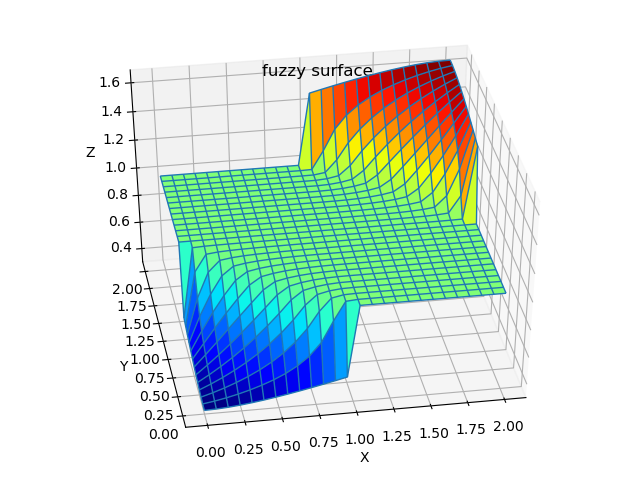

1 Tutorial¶
This simple tutorial shows how to create and configure 2-input, 1-output Fuzzy System: | Mamdani System - in Example 1 | TSK (Takagi-Sugeno-Kang) in Example 2
Table of Contents
1.1 Exmaple1: Mamdani Fuzzy System¶
Overview In this example we create default Mamdani system, configure FIS with triangular input and output membership functions and add some rule to explore properties of out Fuzzy system.
Code for this example You will find in package code in: ffs/examples/example_1_mamdani.py (https://github.com/2dof/ffs/tree/master/ffs)
Imort lib
import numpy as np
from fuzzy import *
from fuzzy_sets import *
Creating Mamdani Fuzzy System
Lets create Mamdani Fuzzy System with 2 inputs and 1 output and default settings: | OR method: ‘max’ , AND method: ‘min’ | Implication method: ‘min’ (minimum) | Aggregation Method: ‘max’ (maximum) | Defuzzyfication Method: ‘centroid’ (center of gravity)
Imputs and outputs name and ranges: | input 1 named ‘x1’ and varianle range from 0 to 2.0 | input 2 named ‘x2’ and varianle range from 0 to 2.0 | output named ‘y1’ and varianle range from 0 to 2.0
fis1=fism('mamdani')
# add inputs and outputs to fizzy
fis1.addvar('in','x1',[0.,2.0])
fis1.addvar('in','x2',[0.,2.0])
fis1.addvar('out','y1',[0.,2.0])
For each inputs and otput we add 3 mfs trangular membership functions:
fis1.addmf('in',1,'A1','trimf',[-1,0,1,0])
fis1.addmf('in',1,'A2','trimf',[0,1,2,0])
fis1.addmf('in',1,'A3','trimf',[1,2,3,0])
fis1.addmf('in',2,'B1','trimf',[-1,0,1,0])
fis1.addmf('in',2,'B2','trimf',[0,1,2,0])
fis1.addmf('in',2,'B3','trimf',[1,2,3,0])
fis1.addmf('out',1,'C1','trimf',[-1,0,1,0])
fis1.addmf('out',1,'C2','trimf',[0,1,2,0])
fis1.addmf('out',1,'C3','trimf',[1,2,3,0])
Lets plot membership functions of fis1 system. First lets import dedicated plot function from plot_fis class then plot mfs:
from plot_fis import plot_mfs
figure(1)
subplot(221); cla()
plot_mfs(fis1,'in',1)
subplot(222); cla()
plot_mfs(fis1,'in',2)
subplot(212); cla()
plot_mfs(fis1,'out',1)
{kind=link}
Adding Rules
Rule is added as coded list of integers of length (N_inpust+ Noutputs +1]
for example: Rule: If x1 is A1 AND x2 B2 then output is C3 | coded Rule : R=[1, 2, 3, 1]
For example:
Lets add Rules to our fuzzy system
R1=[1,1,1,1] # Rule 1: if x1 is A1 and x2 is B1 then y is C1
R2=[2,2,2,1] # Rule 2: if x1 is A2 and x2 is B2 then y is C2
R3=[3,3,3,1] # Rule 3: if x1 is A3 and x2 is B3 then y is C3
fis1.addrule(R1,1.0) # add rules to the fis1 , weighting parameter = 1.0
fis1.addrule(R2,1.0)
fis1.addrule(R3,1.0)
Evaluate fuzzy system
to test out system we need call evaluate(fis1,[x1, x2]) function, for example:
x1 = 0.5
x2 = 0.5
y1 = evaluate(fis1,[x1, x2])
print(f'fuzzy input:[{x1}, {x2}], y1 = {y1}')
where after printing we get:
>> fuzzy input:[0.5, 0.5] y1 = [0.8759]
Note
We just add only 3 Rule which don’t cover changes variable in input space, for example, there is no rule if x1 is A1 and x2 is B3 then y is …. do when we put [x1,x2] =[0.5, 2] , from input x1 mfs: A1, A2 and from input x2 mfs B3 will be activated but none of Rules will be fired, in that case Fuzzy System will return value 0.0 and flag NoRuleFired will be set at 1.
y1 = evaluate(fis1,[0.5, 2])
print ('test for no rule activated: evaluate(fis1,[0.5, 2]) =', y1)
print('fis1.outOfRange =',fis1.NoRuleFired)
>> test for no rule activated: evaluate(fis1,[0.5, 2]) = [0.0]
>> fis1.NoRuleFired = 1
Out od range inputs
For input out of range od input variable fuzzy system will return [0.0] value, and flag outOfRange will be set on 1.
y1 = evaluate(fis1,[-0.5, -0.5])
print ('test for inputts out of range: evaluate(fis1,[-0.5, -0.5]) =', y1)
print('fis1.outOfRange :',fis1.outOfRange)
>> test for no rule activated: evaluate(fis1,[-0.5, -0.5]) = [0.0]
>> fis1.outOfRange : 1
Note
In upper example [x1,x2] =[-0.5, -0.5], are out of defined range for variables [0, 2], when wee look at mfs plots, it is clear that mfs A1 and B1 is activated but inputs are out of range so Flag outOfRange will be set on 1 and output = 0.0 will be retured.
We will get the same result if any of input will be out of range.
Plot Fuzzy Surface
Lets plot fuzzy surface for our Fuzzy system. First we have to import plotting python libraries: mpl_toolkits and matplotlib:
# import plot library
from mpl_toolkits.mplot3d.axes3d import Axes3D
from matplotlib import cm
Then, just generate surface data with getsurf(FIS,Npts) where: | FIS : fis system | Nopts: No of points for variable range to be calculated.
Numpy meshgrin is called to generate mesh from X,Y vectors.
# generatge surface data points
X,Y,Z=getsurf(fis1,25) # X,Y - data vectors of lengths (25+1) each.
X, Y = np.meshgrid(X, Y) # do mesh grid from X,Y input data points
# plot surfase
fig = plt.figure(4)
ax = fig.gca(projection='3d')
ax.plot_surface(X, Y, Z, cmap=cm.jet, rstride=1, cstride=1)
ax.plot_wireframe(X, Y, Z, rstride=1, cstride=1)
ax.set_xlabel('X')
ax.set_ylabel('Y')
ax.set_zlabel('Z')
plt.title('fuzzy surface')

Because not all changes in input variables are covered by Rules (see notes above), there are discontinuities from level Z=1.0 to 0 when none of Rules are activated.
Let fix this by adding some rules to our FIS. first add Rule 4 and 5, then check (by plotting surface) what happen if rest of rules will be added. Play changing implication (“then”) by changing No of output mfs.
fis1.addrule([3, 1, 2, 1],1.0) # Rule 4
fis1.addrule([1, 3, 2, 1],1.0) # Rule 5
#fis1.addrule([2, 1, 1, 1],1.0) # Rule 6
#fis1.addrule([1, 2, 1, 1],1.0) # Rule 7
#fis1.addrule([2, 3, 3, 1],1.0) # Rule 8
#fis1.addrule([3, 2, 3, 1],1.0) # Rule 9

Rule 4 and 5 added |

Rest of rules added |
{kind=link}
{kind=link}
Changing defuzzyfication method and other parameters
Changing deffuzyfication method or other parameters is done just by changing attributes of fuzzy system. For example defuzzyfication method :
fis1.Defuzzymethod = 'mom' # or 'mom', 'som', 'lom', 'bisector'
For example changing ‘AND’ method :
#fis1.ANDmethod = 'eprod' # AND method Tnorms: ,'min' ,'prod' , eprod'
Surfaces for changes FIS parameters:

5 rules FIS, deffuzyfication: ‘mom’ |

5 rules FIS, AND method: ‘eprod’ |
{kind=link}
{kind=link}
For more detail about attributes of fuzzy of fuzzy system read API documentation for fism class.
1.2 Exmaple 2: TSK Fuzzy System (in preparation)¶
Overview In this example TSK Fuzzy Model with singleton (constant) output membership functions.
Imort library
import sys
sys.path.append("..")
from fuzzy import *
from fuzzy_sets import *
from plot_fis import plot_mfs
Cerating TSK Fuzzy system
fis2=fism(type='tsk')
#=============Add variabble====================
fis2.addvar('in','x1',[-5.,5.])
fis2.addvar('in','x2',[-5.,5.])
fis2.addvar('out','y1',[-10.,10.0])
# input 1
fis2.addmf('in',1,'A1','gaussmf',[3,-5,0,0]) # [sigma value, expected value]
fis2.addmf('in',1,'A2','gaussmf',[3,5,0,0])
# input 2
fis2.addmf('in',2,'B1','gaussmf',[3,-5,0,0])
fis2.addmf('in',2,'B2','gaussmf',[3,5,0,0])
# output
fis2.addmf('out',1,'C1','singleton',[-10,0,0,0])
fis2.addmf('out',1,'C2','singleton',[0,0,0,0])
fis2.addmf('out',1,'C3','singleton',[10,0,0,0])
To plot MFS just call plot_mfs(…) :
figure(1);
subplot(221); cla(); plot_mfs(fis2,'in',1) ; plt.title('TSK Fuzzy mfs')
subplot(222); cla(); plot_mfs(fis2,'in',2)
subplot(212); cla();plot_mfs(fis2,'out',1)
{kind=link}
Add Rules
R1=[1, 1, 1, 1] # If x1 is A1 and x2 is B1 then y is C1
R2=[1, 2, 2, 1] # If x1 is A2 and x2 is B2 then y is C2
R3=[2, 1, 2, 1] # If x1 is A1 and x2 is B1 then y is C2
R4=[2, 2, 3, 1] # If x1 is A2 and x2 is B2 then y is C3
fis2.addrule(R1,1.)
fis2.addrule(R2,1.)
fis2.addrule(R3,1.)
fis2.addrule(R4,1.)
{kind=link}